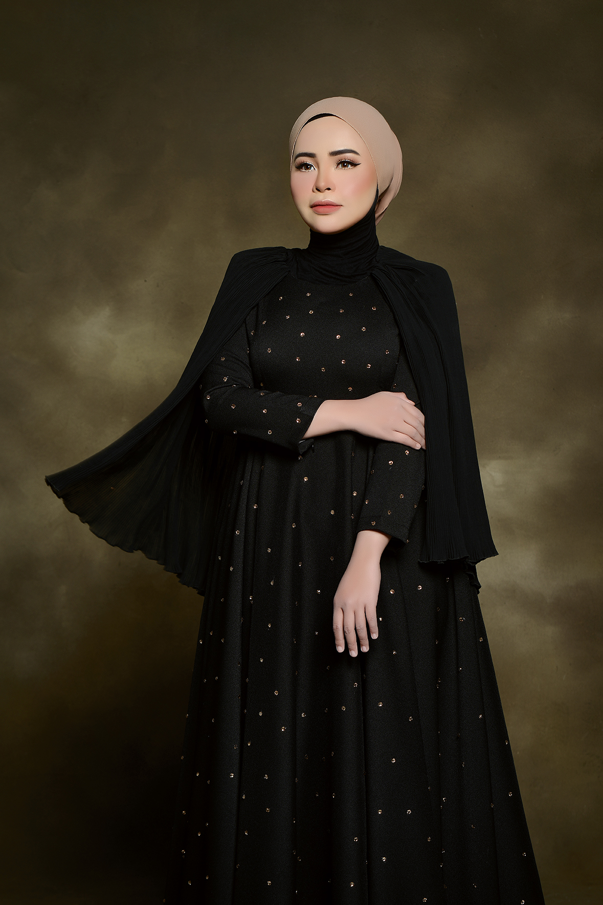
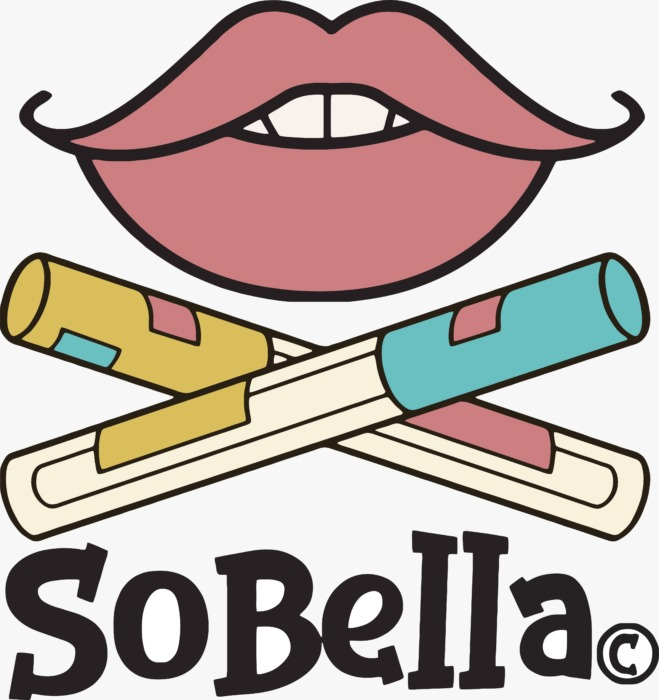

Wan Nur Syuhada Wan Norzie, also known as Syu, a young entrepreneur from Kelantan, Malaysia, established Sobella Cosmetics.
Syu, a recent graduate with few career options, decided to create her own route instead of waiting for one. Driven by ambition and determination, she founded Sobella in 2016 with the intention of realizing her aspirations and enabling other women to follow in her footsteps.
From modest beginnings, Syu concentrated on developing high-quality, reasonably priced makeup for Malaysian ladies. As the CEO of Sobella Beauty Sdn Bhd today, she uses the Sobella agent system to encourage thousands of women to start their own businesses.

The foundation of Sobella Cosmetics is the idea that beauty has to be powerful, inclusive, and accessible.
Sobella is a brand that promotes self-expression, confidence, and financial independence for women in Malaysia. The name combines the Italian terms So (extremely) and Bella (beautiful), meaning "Truly Beautiful".
To create a top cosmetics brand in Malaysia that enables women to feel attractive, self-assured, and successful in both their personal and professional lives.